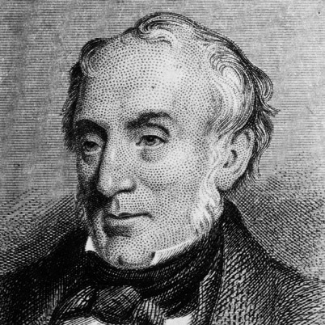

|
Wordsworth's poem:
- I Wandered Lonely As A Cloud
- My Heart Leaps Up
- The Solitary Reaper
<<Back to main page
|

William Wordsworth
(7 April 1770 - 23 April 1850)
Wordsworth was one of the most influential of England's Romantic poets.
William Wordsworth was born on 7 April 1770 at Cockermouth in Cumbria. His father was a lawyer. Both Wordsworth's parents died before he was 15, and he and his four siblings were left in the care of different relatives. As a young man, Wordsworth developed a love of nature, a theme reflected in many of his poems.
In 1795, Wordsworth received a legacy from a close relative and he and his sister Dorothy went to live in Dorset. Two years later they moved again, this time to Somerset, to live near the poet Samuel Taylor Coleridge, who was an admirer of Wordsworth's work. They collaborated on 'Lyrical Ballads', published in 1798. This collection of poems, mostly by Wordsworth but with Coleridge contributing 'The Rime of the Ancient Mariner', is generally taken to mark the beginning of the Romantic movement in English poetry. The poems were greeted with hostility by most critics.
In 1799, after a visit to Germany with Coleridge, Wordsworth and Dorothy settled at Dove Cottage in Grasmere in the Lake District. Coleridge lived nearby with his family. Wordsworth's most famous poem, 'I Wandered Lonely as a Cloud' was written at Dove Cottage in 1804.
In 1802, Wordsworth married his childhood friend, Mary Hutchinson. The next few years were personally difficult for Wordsworth. Two of his children died, his brother was drowned at sea and Dorothy suffered a mental breakdown. His political views underwent a transformation around the turn of the century, and he became increasingly conservative, disillusioned by events in France culminating in Napoleon Bonaparte taking power.
Wordsworth died on 23 April 1850 and was buried in Grasmere churchyard. His great autobiographical poem, 'The Prelude', which he had worked on since 1798, was published after his death.
|